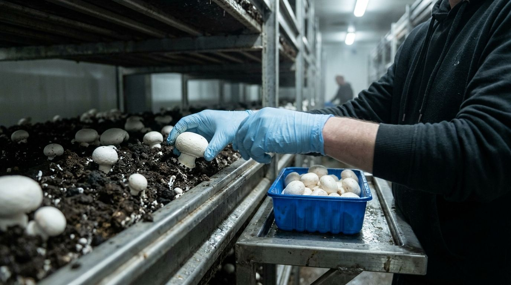
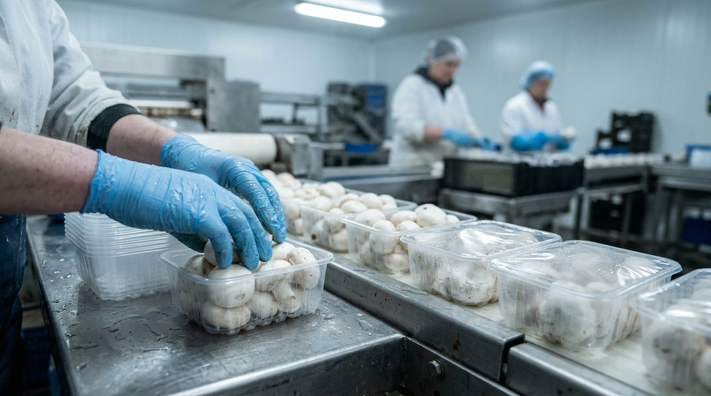
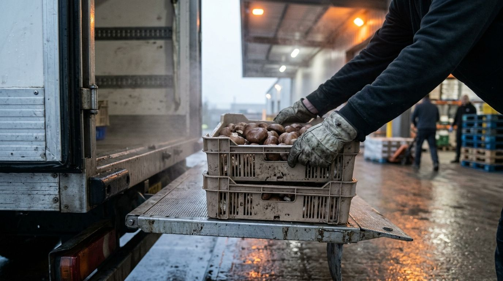

Bawn, Co. Monaghan
Grown in the dark. On your shelf on time.
Fresh mushrooms for retail distribution centres and foodservice wholesalers, picked by hand and planned back from the day they reach the shelf.
Thirty-two growing rooms. One promise per order.
Every week we tell each customer how much we can pick for them, and we pick it. No surprise shorts on Thursday, no price that moves with the weather.
Classics
250 g · 400 g · 2.5 kgA normal day
From the bed to the loading bay


